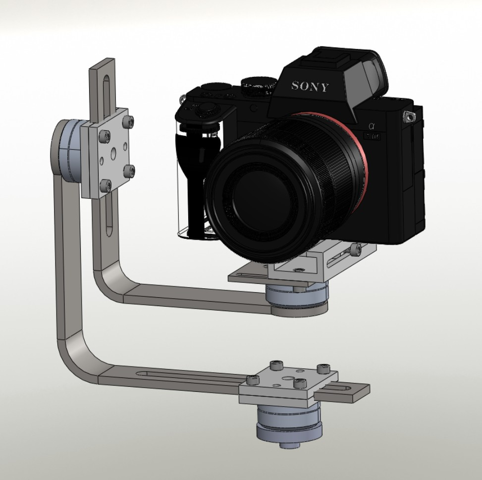
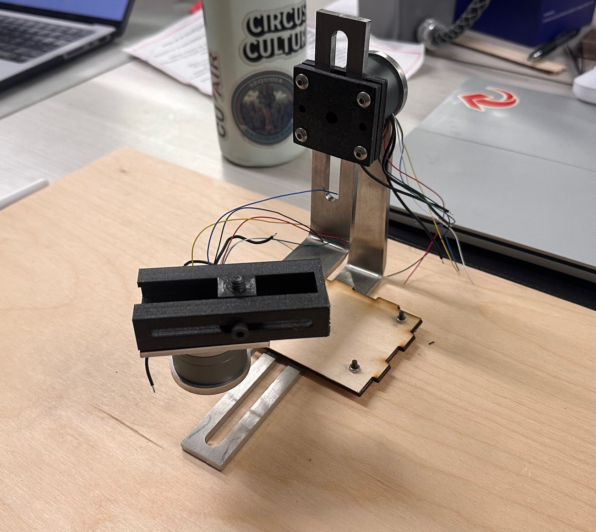

Design and Development of 2.5 Axis Camera Gimbal

Figure 1: CAD Model of 2.5 Axis Camera Gimbal
For this project I designed a 2.5-axis camera gimbal designed for automatic overhead tracking of
CUAir's planes. This project was neccessary in order to get smooth consistent footage for our competition videos.
This project is currently in the manufacturing and testing stage.
Critical Design Review
Recent Updates
Since the CDR manufacturing progress was made:
- Send Cut Send parts arrived.
- Initial Fit check and assembly completed, reprinting and adjusting tolerances for certain 3D printed parts.
- Beginning to integrate with electrical and imaging subteams.

Figure 2 and 3: CAD model (left) and assembled gimbal (right)